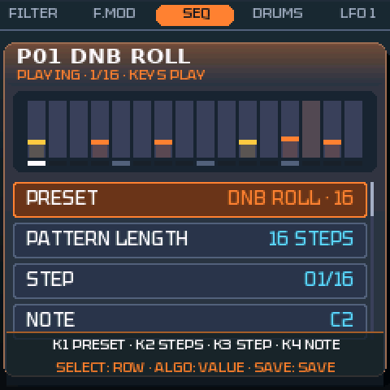
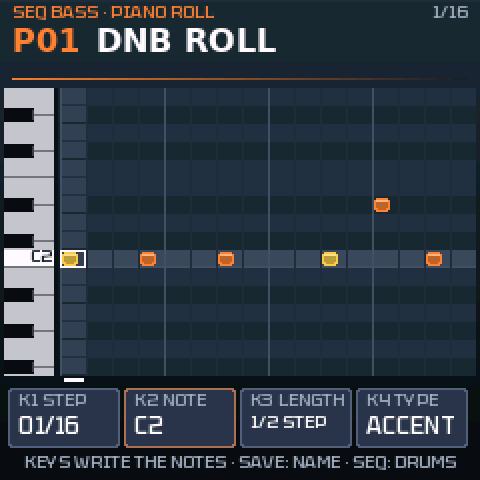
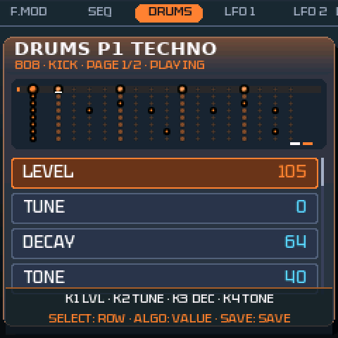
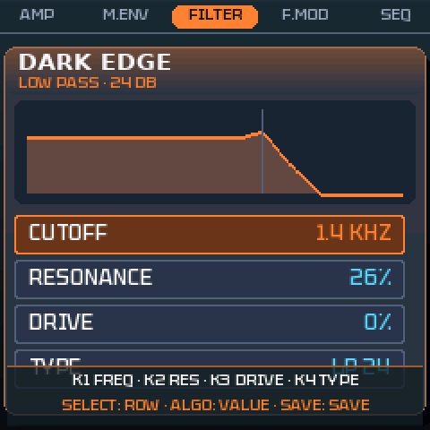
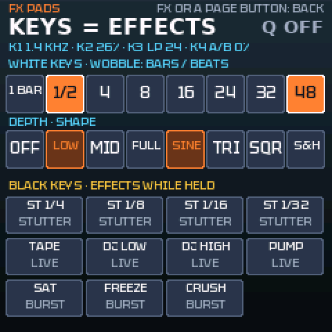

BETA 1.1.02 · en desarrollo: cuéntame qué ves en tu FM-1

https://guizmoh.github.io/K-WASUB_Firmware_for_FM1/
Convierte tu FM-1 en un sintetizador de graves moderno
K-WASUB es un firmware gratuito para el M-VAVE FM-1. Está hecho para crear y tocar graves de DnB, dub, dubstep y techno: reeses que gruñen, subs profundos, 808 y, sobre todo, un wobble que moldeas en directo con los potenciómetros y las teclas.
¿Para qué sirve?
Un bajo vivo
Las 27 teclas tocan el bajo, K1–K4 ajustan los 4 parámetros importantes de cada página. Mantén LFO y gira un potenciómetro: el LFO 2 se asigna a ese ajuste (con OCT−: LFO 1, con OCT+: LFO 3, el global).
Efectos en las teclas
FX PADS (mantén FX): teclas blancas = velocidad y forma del wobble, teclas negras = stutter, tape stop, filtro DJ, pump, saturación, FREEZE, crush.
Un sonido de bajo de verdad
2 osciladores con 9 motores (ANALOG, 808, CS, wavetable, FM de 4 operadores, GROWL, ADDITIVE, phase dist, hard sync), sub bloqueado en A, samples y resample, 7 filtros, OTT multibanda, mono bass, compresor con pump, EQ de 4 bandas.
Secuenciadores
SEQ BASS (32 patrones de hasta 64 pasos, piano roll, cadena, copiar / pegar) y DRUMS (808, 909, dub techno, acústico), con probabilidad, condiciones y parameter locks en cada paso.
Morph y directo
MORPH X/Y: cuatro sonidos en las esquinas de un cuadrado. MORPH A/B: un fundido a tempo. PERFORM: 4 macros, morph y pads en una pantalla.
Seguro y abierto
Gratuito, de código abierto (GPL-3.0), se reinstala o se quita por USB, con modo de rescate. Probado en el FM-1 (hardware), en el emulador y con pruebas automáticas.
Probar en el navegador
El mismo firmware, compilado para tu navegador: no hace falta un FM-1. Haz clic en la pantalla y toca con el teclado del ordenador, el ratón en los botones y la rueda en los potenciómetros.
Abre el emulador aquí, sin instalar nada
Instalar en el FM-1
1Conecta
El FM-1 por USB al ordenador, con un cable de datos (no solo de carga). Cierra los demás programas MIDI.
2Abre el instalador
En Chrome o Edge: installer.html. Haz clic en «Install K-WASUB» y confirma. No desconectes nada hasta el final.
3Toca
Tras reiniciar aparece la pantalla de inicio. Pulsa un botón. La chuleta resume todos los botones.
Sin Chrome ni Edge: INSTALL-Windows.bat, INSTALL-Mac.command o INSTALL-Linux.sh (Python 3). Puedes volver a KAWA o al firmware original cuando quieras; mantener OCT− al encender abre el rescate USB.
Un vistazo








Novedades: en la página inglesa · versiones en GitHub
Apoyar K-WASUB
K-WASUB es gratuito y lo seguirá siendo. Si te sirve, puedes ayudar a pagar el tiempo y el material de prueba (FM-1, cables…). ¡Gracias!
Preguntas frecuentes
¿Pierdo el firmware original?
No. Puedes reinstalar el firmware original (M-UPGRADE) cuando quieras.
¿El firmware está en español?
En GLO › GLOBAL SETUP › LANGUAGE eliges English, Français o Español: los títulos de las páginas se traducen; los nombres de los ajustes quedan en inglés, como en la mayoría de los sintetizadores.
¿Está terminado?
No: K-WASUB es una BETA. Está probado en el FM-1 (hardware), en el emulador y con pruebas automáticas en cada versión; algo puede fallar todavía. Cuéntame lo que encuentres (pestaña Issues de GitHub).